The Xadow Wearable Kit For Edison is a perfect kit making wearable devices with Intel Edison.It includes an Edison expansion board named Xadow-Edison and 8 extremely small modules, these modules are sensors, actuators, UI conmmunication modules. Connecting with flexible FFC you can quickly make some interesting and cool wearable devices. Attention that, you have to get an Intel Edison and two USB cables by your own.
| Parts | Count | Parts | Count |
|---|---|---|---|
| Xadow - Edison | 1 | Xadow - 3 Axis Accelerometer | 1 |
| Xadow - Edison Programmer | 1 | Xadow - Barometer BMP 180 | 1 |
| Xadow - Edison SD | 1 | Battery | 1 |
| Xadow - Q Touch Sensor | 1 | Digital RGB LED Flexi-Strip | 1 |
| Xadow - NFC | 1 | Power cable White | 5 |
| Xadow - Breakout | 3 | Power cable Red | 5 |
| Xadow - Buzzer | 1 | Power cable Yellow | 5 |
| Xadow - Vibration Motor | 1 | FFC cable package | 1 |
| Xadow - OLED | 1 | Color printed Tutorial | 1 |
| NFC Tags | 3 |
Pay attention to the unfilled corner, all the modules’ unfilled corner point to the same direction. The Xadow modules's double sides can connect two modules by FFC since that xadow can cascade its modules as long as posible like a watch or a necklace, so suitable for wearable prototying.
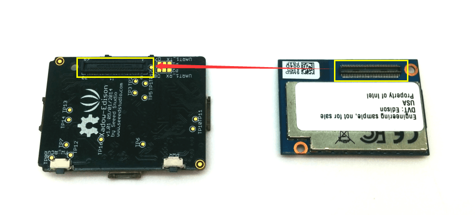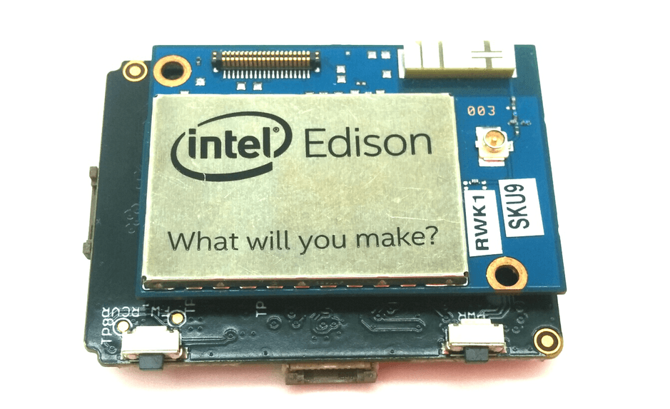
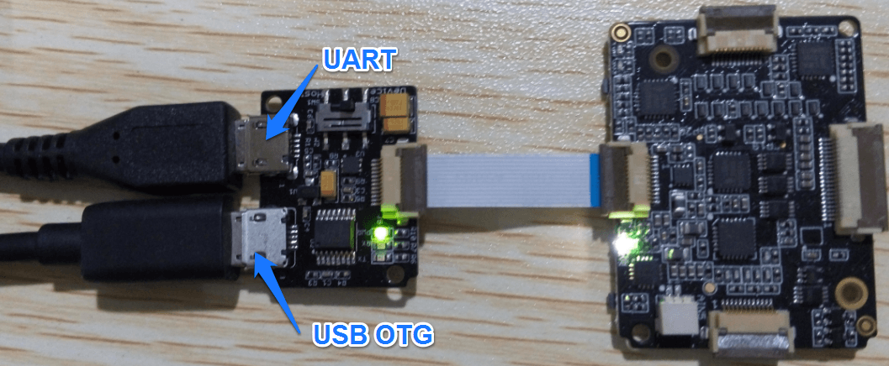
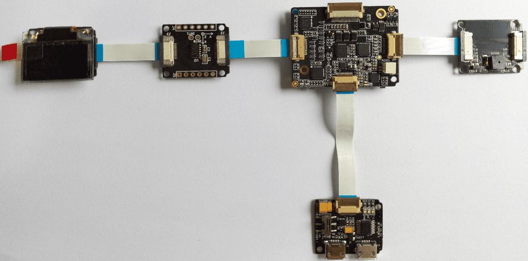
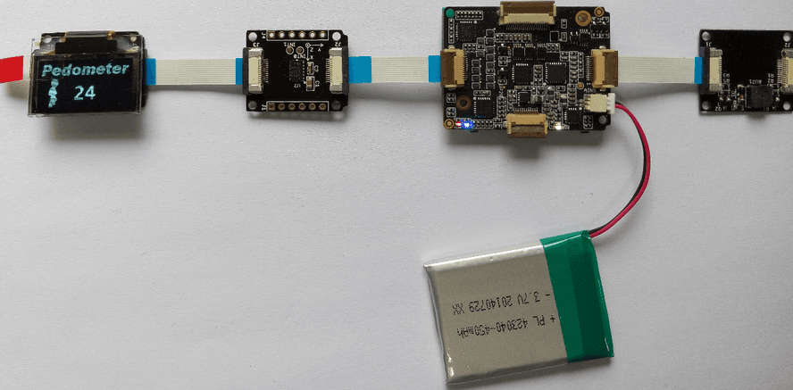
1. Installing Edison Arduino IDE and require drivers. Click here to see the tutorial on the official site.
2. Download Demos
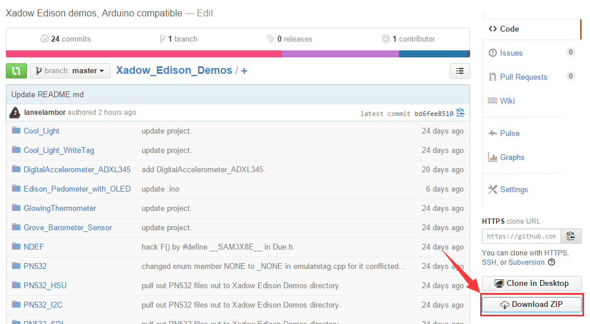
3. IDE Setting
4. Upload Sketch
The LED strip has 3 pins, to connect the strip and the breakout board you can do a simple welding. Connect the VCC pins GND pins, and the signal pin to breakout board’s MISO pin.
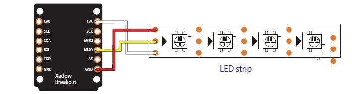
The NFC demo use three NFC tags as keys to open the led strip, but first you have got the NFC tags they were recorded nothing in. So you have to make them useful tags.
Step 1.Use the demo FormatTag to format the tags at the first time using them.
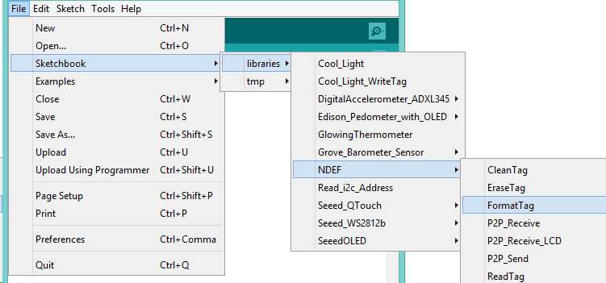
Note:Upload the sketch and open the serial moitor when you see Place an unformatted Mifare Classic tag on the reader., then put one tag on the antenna board. Wait for a while, you’ll see Success, tag formatted as NDEF. for successfully formating or Format failed. for maybe the tag has been formated yet.
Step 2.Open the demo Cool_Light_WriteTag and change the card record WRITE_TAG_MESSAGE.
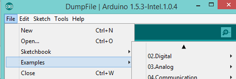
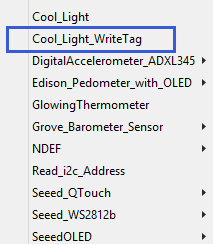
Step 3.Compile and upload the shetch.
Step 4.Run a serial monitor, put a NFC tag close to the antenna, after the serial monitor shows Success. Try reading this tag with your phone . a usefull tag just been made. Repeat the steps Change WRITE_TAG_MESSAGE to write other tags.
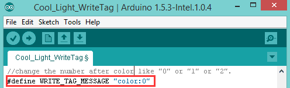
WHAT WE’VE GOT HERE
In this example, we use an NFC module and a QTouch module to control a RGB LED strip, QTouch module have 3 buttons, by touch different button you'll see different light performance.
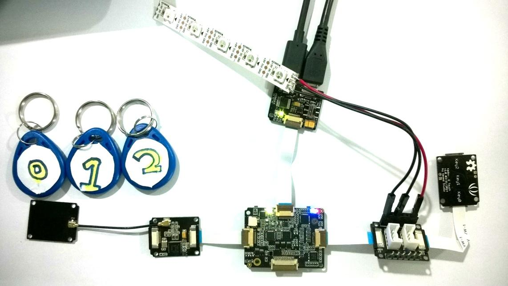
Upload Sketch
Click File>Examples>Cool_Light.
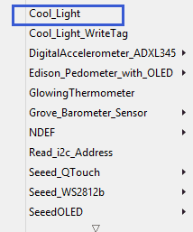
Code Detail
#include <Wire.h>
#include <PN532_I2C.h>
#include <PN532.h>
#include <NfcAdapter.h>
#include <TimerOne.h>
#include "Seeed_QTouch.h"
#include "Seeed_ws2812.h"
#define SIG_PIN 12 //LED strip signal pin
#define LED_NUM 5 //LED strip led number
//leave out some code...
void setup() {
strip.begin();
nfc.begin();
Serial.begin(115200);
color_domain_init(LED_NUM);
Timer1.initialize(150000); // initialize timer1
Timer1.attachInterrupt(callback); // attaches callback() as a timer overflow interrupt
}
void callback() //timer ISR to read QTouch number and change the LED performance
{
int tn = QTouch.touchNum(); // QTouch callback function
if( tn == 0 | tn == 1 | tn == 2 ) {
colorChangeFromNumber(tn);
}
}
void loop() {
colorChangeFromString(getStringFromNFC()); // Read string form NFC and change the LED color
delay(500);
}
RESULT
1. Put one of the the NFC tags onto the antenna to show cool light, in this example you’ll see leds shine in three modes they are single color loop, flowcolor and rainbowCycle. The three tags have different messages in them, put on defferent tag to show each mode.
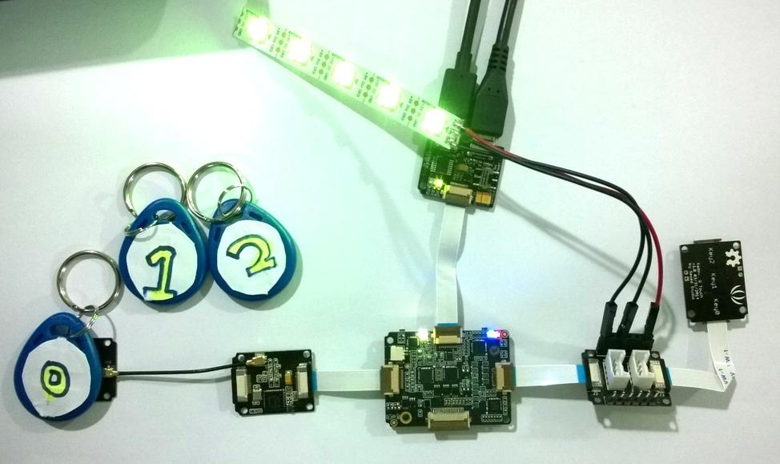
2. As to QTouch, by touching one of the buttons the led strip shows a single color red green or blue.
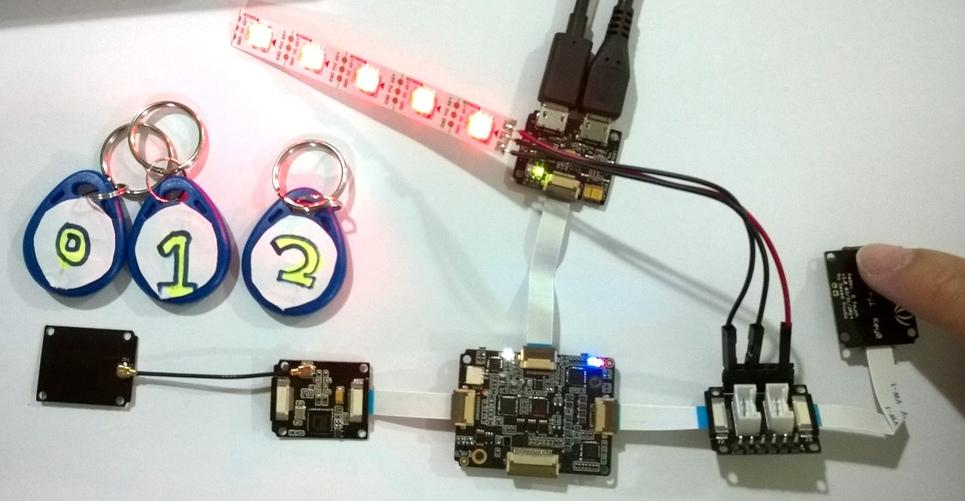
3. Now you can disconnect the Edison-Programmer and use the Li-Po battery to suport power.
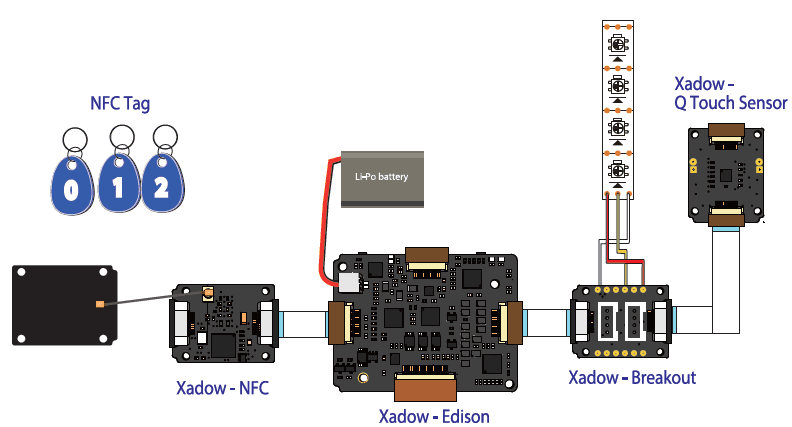
WHAT WE’VE GOT HERE
In this example we use a barometer module to monitor the atmosphere about temperature air pressure and altitude, these messages show on the OLED module. We setup a secure temperature beteen 20 ℃ ~ 30 ℃, when the temperature is out of the secure range the vibrator will shock and showing warning picture on OLED when temperature over 30 ℃ or less than 20 ℃.
Now open the demo GlowingThermometer compile and upload the sketch.
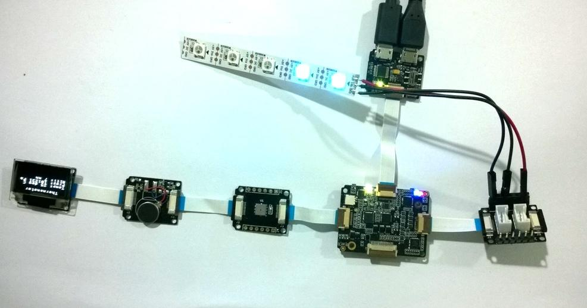
Upload Sketch
Click File>Examples>GrowingThermometer
CODE DETAIL
#include <Wire.h>
#include <SeeedOLED.h>
#include "Barometer.h"
#include <Seeed_ws2812.h>
#define LEDN 5
#define SIG_PIN 12
uint8_t color[LEDN];
uint8_t t[5] = {25, 26, 27, 28, 29};//you can setup 5 temperature steps to track color
//Barometer
float temperature;
float pressure;
float altitude;
float atm;
void setup()
{
Serial.begin(115200);
Wire.begin();
SeeedOled.init(); //initialze SEEED OLED display
initOledTitle(); //init OLED Title
myBarometer.init(); //Barometer init
vibratorInit(); //init vibrator pins
strip.begin(); // Init and begin strip drivers
color_domain_init(20, 30, LEDN); //this method is to get the relation of temperature raise and color chang.
}
//leave out some code...
void loop()
{
temperature = myBarometer.bmp085GetTemperature(myBarometer.bmp085ReadUT()); //Get the temperature, bmp085ReadUT MUST be called first
pressure = myBarometer.bmp085GetPressure(myBarometer.bmp085ReadUP());// Get the pressure
altitude = myBarometer.calcAltitude(pressure);
atm = pressure / 101325;
colorFollow(); //led strip changing with temperature
TempAlarm(); //monitor temperature and warning
messagetoSerial();
messagetoOled();
delay(500);
}
//More detail watch the download soure code ...
RESULT
1.Defualt OLED display
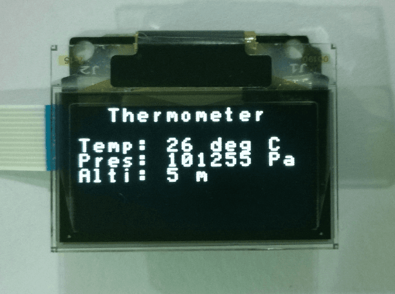
2. High temperatrue warning display.
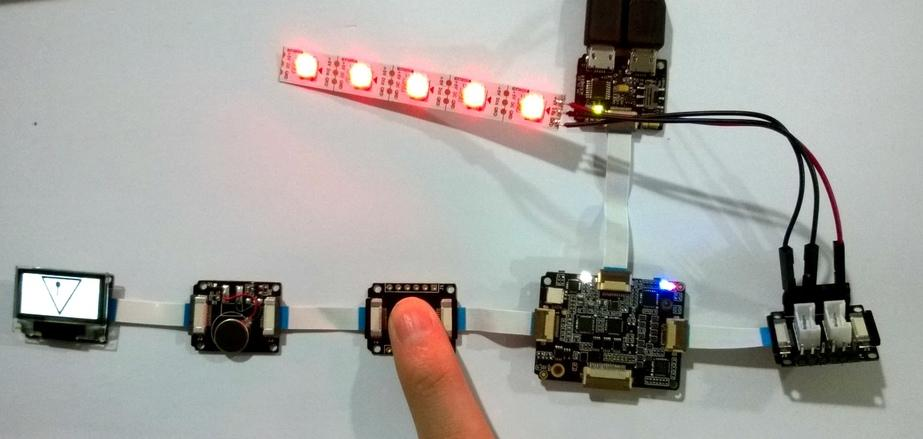
TIPS
1.You’ll need to warm the Xadow-Barometer module to see what happen when the temperature is out of the secure range.
2. As the temperature raising the leds light up one by one and the color change from blue to red.
WHAT WE’VE GOT HERE
This example shows how to make a pedometer that counts a person’s steps. It uses a Xadow – Edison Board, Xadow – OLED 0.96”, Xadow – 3-Axis Accelerometer and Xadow – Buzzer. The OLED screen will display the step-counts and the buzzer will beep if you do not move for a long time. In addition, when Intel Edison Board connects to a Wi-Fi network, you can check the step-counts using a web browser.
Upload Sketch
1.Click File>Examples>Edison_Pedometer_with_OLED and select the demo
2.Change the char ssid[] = STEST with your network name and the char pass[] = 876543210 with your network password.
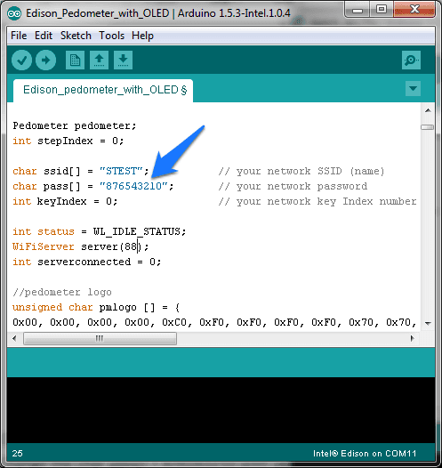
3.Click upload icon.
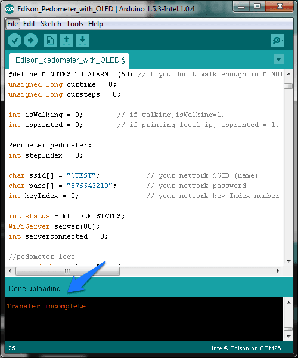
Code Detail
#include <Wire.h>
#include <SeeedOLED.h>
#include <Wire.h>
#include <ADXL345.h>
#include "pedometer.h"
#include <SPI.h>
#include <WiFi.h>
#include <TimerOne.h>
#define MINUTES_TO_ALARM (60) //If you don't walk enough in MINUTES_TO_ALARM minutes, the buzzer beeps 0.5s.
unsigned long curtime = 0;
unsigned long cursteps = 0;
int isWalking = 0; // if walking,isWalking=1.
int ipprinted = 0; // if printing local ip, ipprinted = 1.
Pedometer pedometer;
int stepIndex = 0;
char ssid[] = "STEST"; // your network SSID (name)
char pass[] = "876543210"; // your network password
int keyIndex = 0; // your network key Index number (needed only for WEP)
int status = WL_IDLE_STATUS;
WiFiServer server(88);
int serverconnected = 0;
void setup() {
Serial.begin(9600); // set baudrate = 9600bps
// put your setup code here, to run once:
buzzer_init();
pedometer.init();
Wire.begin();
SeeedOled.init(); //initialze SEEED OLED display
SeeedOled.clearDisplay(); //clear the screen and set start position to top left corner
SeeedOled.setNormalDisplay(); //Set display to normal mode (i.e non-inverse mode)
SeeedOled.setPageMode(); //Set addressing mode to Page Mode
WiFi_Init();
SeeedOled.drawBitmap(pmlogo,384);
printxybmp(3,1,5,24,WalkMan[stepIndex]);
printnum(4,6,"0");
curtime = millis(); // get the current time
cursteps = pedometer.stepCount; // get the current steps
Timer1.initialize(200000); // set a timer of length 100000 microseconds (or 0.1 sec - or 10Hz => the led will blink 5 times, 5 cycles of on-and-off, per second)
Timer1.attachInterrupt( TimerISR ); // attach the service routine here
}
void loop() {
// update pedometer steps
StepsUpdate();
// if wifi connected and not walking, print local ip.
PrintLocalIP();
// if wifi disconnected,reconnect.
if(WiFi.RSSI()==0){
status = WL_IDLE_STATUS;
}
//If you don't walk enough in MINUTES_TO_ALARM minutes, the buzzer beeps 0.5s.
if((millis()-curtime > MINUTES_TO_ALARM * 60000) && (pedometer.stepCount - cursteps < MINUTES_TO_ALARM*60/2)){
buzzer_on(500);
curtime = millis();
cursteps = pedometer.stepCount;
}
}
Result
1. Shake Xadow-3-Axis Accelerometer ,you will see the pedometer counts.
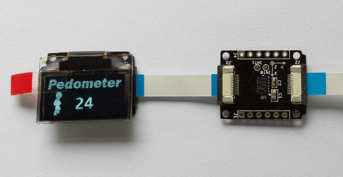
2. When the pedometer connects WiFi network, the local IP will display on the OLED screen:
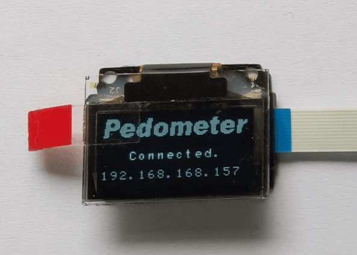
3. On a device connected on the same network, open a web browser, and go to the IP address displayed on the OLED or Serial Monitor, you can see the step counts.
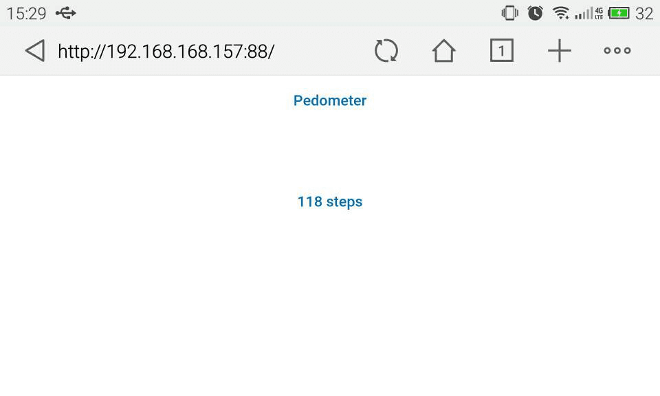
4. You can also apply a LiPo Battery to Xadow-Edison(as follows).
5. Now a beautiful watch case is available. You can download the 3D model files and print them using a 3D Printer.
Here is what it looks like with the watch case:
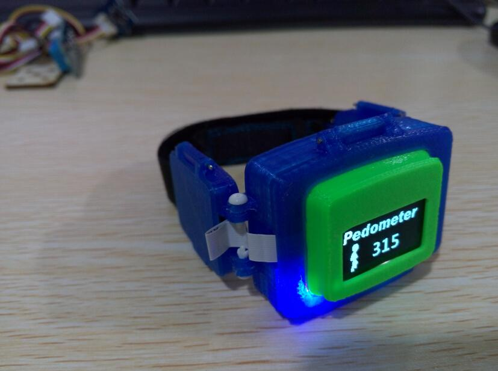
TIPS
1. If wifi is connected, the local ip will display on the OLED screen.
2. When visiting the web server, a port no. (for example 88) should be added, like this: 192.168.168.157:88
If you have questions or other better design ideas, you can go to our forum or wish to discuss.